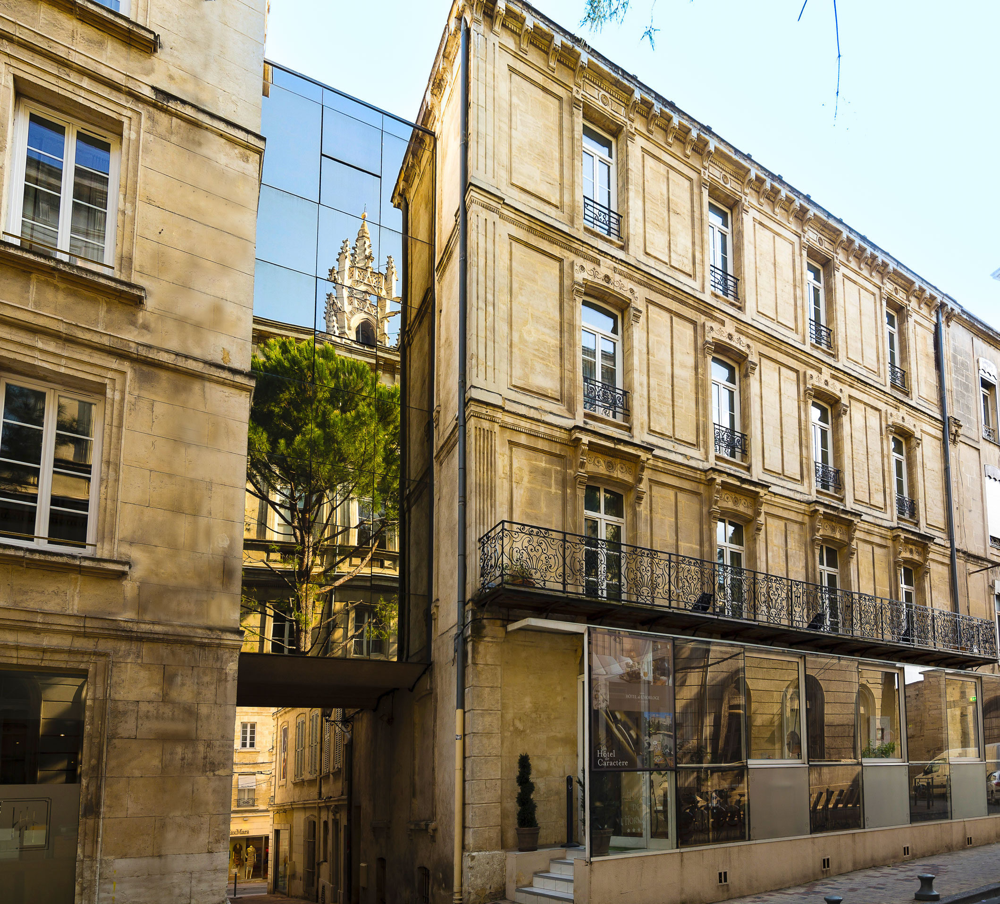

Bienvenue à l‘Hôtel de l’Horloge à Avignon, un charmant hôtel 4 étoiles idéalement situé sur la Place de l’Horloge au cœur du centre-ville d’Avignon. Découvrez un véritable havre de confort et d’élégance.
Profitez de notre délicieux petit déjeuner servi dans notre superbe véranda, savourez l’ambiance unique de notre salon bibliothèque, qui peut être transformé en un espace de réunion polyvalent, et laissez-vous séduire par nos 66 chambres, toutes décorées avec goût dans des tons chaleureux et des matériaux nobles tels que le bois, le jonc de mer et le fer forgé. Notre hôtel incarne l’essence même de la Provence contemporaine.
Séjournez à l’Hôtel de l’Horloge et plongez dans une expérience inoubliable au cœur d’Avignon. Que vous soyez ici pour affaires ou pour le plaisir, notre emplacement privilégié et notre atmosphère enchanteresse sauront vous charmer.
Réservez dès maintenant votre séjour à l’Hôtel de l’Horloge et découvrez la magie d’un hôtel 4 étoiles au cœur d’Avignon, où le charme et le confort se rencontrent pour créer une expérience inoubliable.